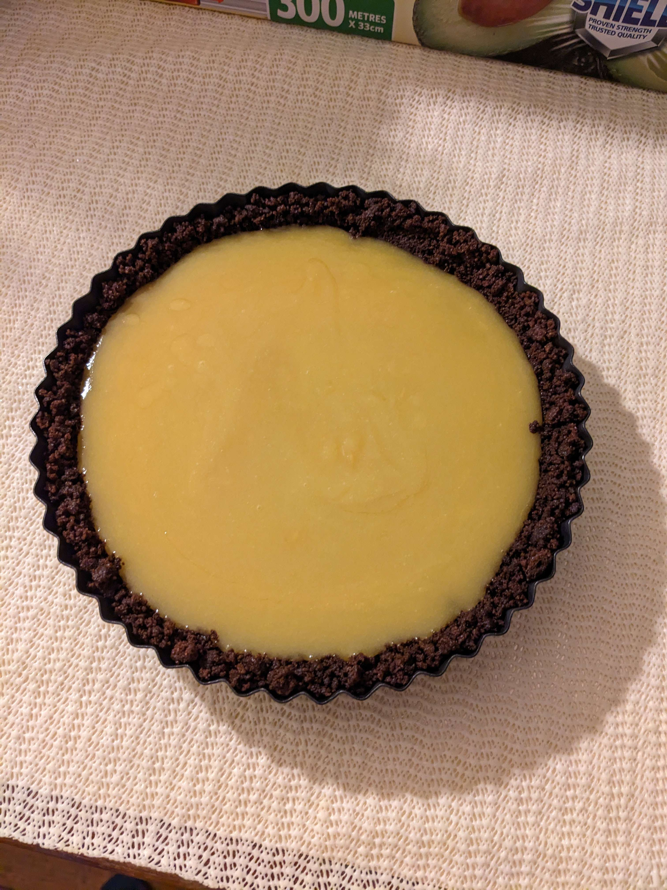

Lemon tart

A chocolate biscuit base as the crust to give it some sweetness along with
a sweet and zesty filling which comes from the lemons itself. It is
delicious and easy to make as long as your willing to put in some time and
effort into making it.
Ingredients
Tart base
- Chocolate biscuits
- Unsalted butter
Lemon curd filling
- Lemons
- Sugar
- Eggs
- Butter
Method
-
Break the chocolate biscuits into smaller pieces close to powder level
-
Melt the butter using a microwave or something similar such as a pan
- Mix the melted butter with the biscuits
- ~Insert lemon curd method~
-
Using a non-stick tart pan, place the mixed biscuit and form the base of
the tart along with the sides of the pan
- Fill with the lemon curd mixture
-
Leave in fridge overnight or put it in the fridge for more than 6 hours
-
Take it out and check if the lemon curd has been solidified and be ready
to served